あなたのことかもしれません
毎月、まじめに働いている。
貯金だって、している。
——なのに、不安が消えない。
その正体は、"お金が足りないこと"ではありません。
「全部つなげた1枚の地図」を、まだ見たことがないだけです。
そして、その地図は——ときに、残酷なほど正直です。
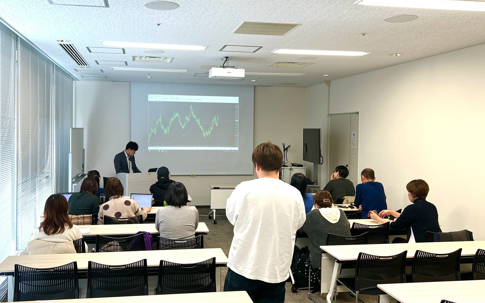
「まじめにやってるのに不安が消えない」——
最近、この声が本当に多いんです。
だから今、新しいサービスを作っています。
完成前に、リアルな声を反映させたい。
その正体は、"お金が足りないこと"ではありません。
「全部つなげた1枚の地図」を、まだ見たことがないだけです。
そして、その地図は——ときに、残酷なほど正直です。
40代の、共働きのご夫婦。
お子さんは2人。
収入も、暮らしぶりも、ごくふつう。
どこにでもいる、まじめで、がんばっているご家族です。
でも、お金の流れを"全部つなげて"みたとき——
私たちは、言葉を失いました。
※ 実際のシミュレーション例をもとにした図です。給与・教育費・住宅・保険・年金などから精密に算出します。
物価が上がるほど、"その日"は早くやってきます。
※ 上昇率別の推計イメージ図です。
——これ全部、
たった1回のシミュレーションで見えたことです。
給与も、教育費も、住宅も、保険も、年金も、老後の物価も。
ぜんぶ数字にして、初めて"本当のこと"が見えました。
無料の相談では、ここまで教えてくれません。
でも、これは絶望の話じゃない。
"見えた"なら、まだ間に合う。
それが、この数字が教えてくれたことでした。
突然のお願い、すみません。
少しだけ、相談に乗ってもらえたら嬉しいです。
無料の相談に行っても、結局は保険の話で終わってしまう。
本当に知りたいのは、そこじゃないのに——。
さっきのような"現実"は、教えてもらえないままです。
だから、決めました。
"その場かぎり"のアドバイスは、もう終わりにしよう、と。
保険を売るために、数字を見るんじゃない。
あなたの人生のために、数字を使う。
給与も、教育費も、住宅も、老後も。
ぜんぶをつなげて、たった1枚の"地図"にする。
そして半年に一度、隣に座って、一緒に見直す。
言うなれば、あなた専属の「お金の参謀」。
そんな相談サービスを、いま本気で作っています。
ただ、作る側の思い込みだけで進めたくない。
だから、実際にお金と向き合っているあなたの"生の感覚"を聞かせてほしいんです。
質問は5つだけ。
知識は、いりません。
いまのありのままで選んでもらえれば大丈夫です。
あなたの声が、このサービスをまっとうなものにしてくれます。
どうか、力を貸してください。
① まず、あなたのことを、とことん伺います。
たとえば——ここまで、細かく。
（実際にお伺いする項目の一部です）
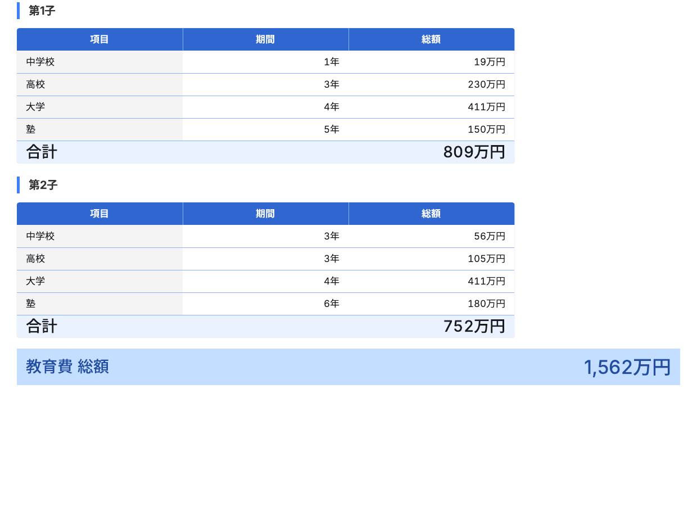
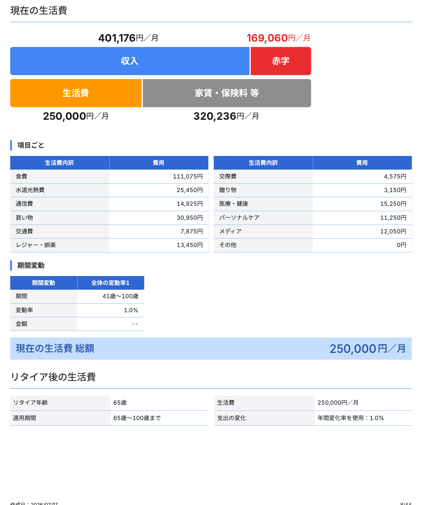
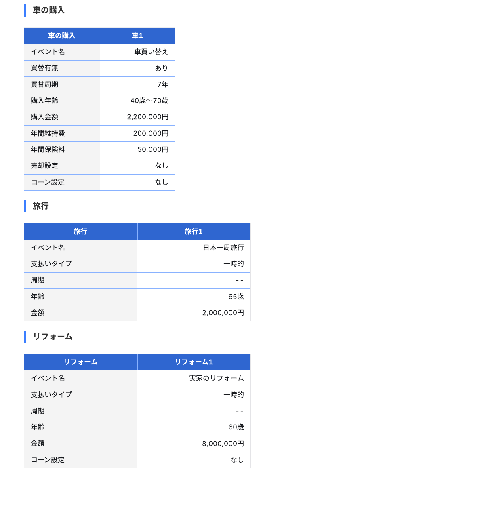
② そのすべてが、こんな"設計図"に。
（実際にお渡しする分析書サンプルの一部です）
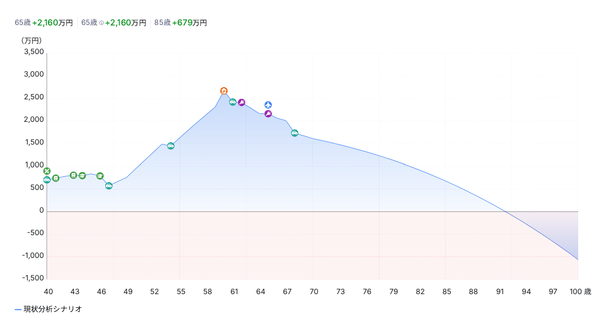
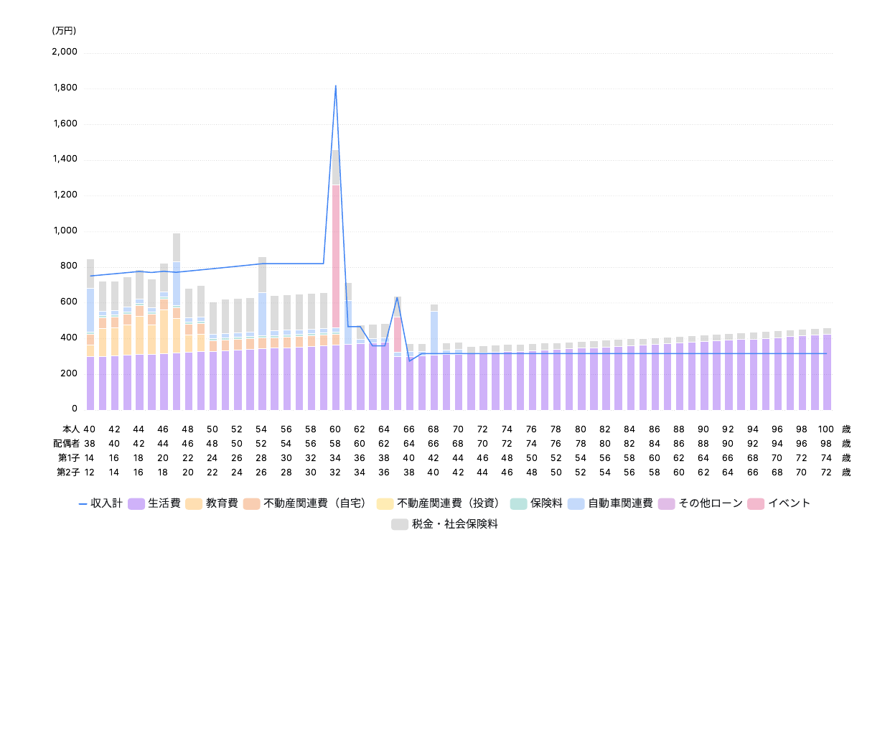
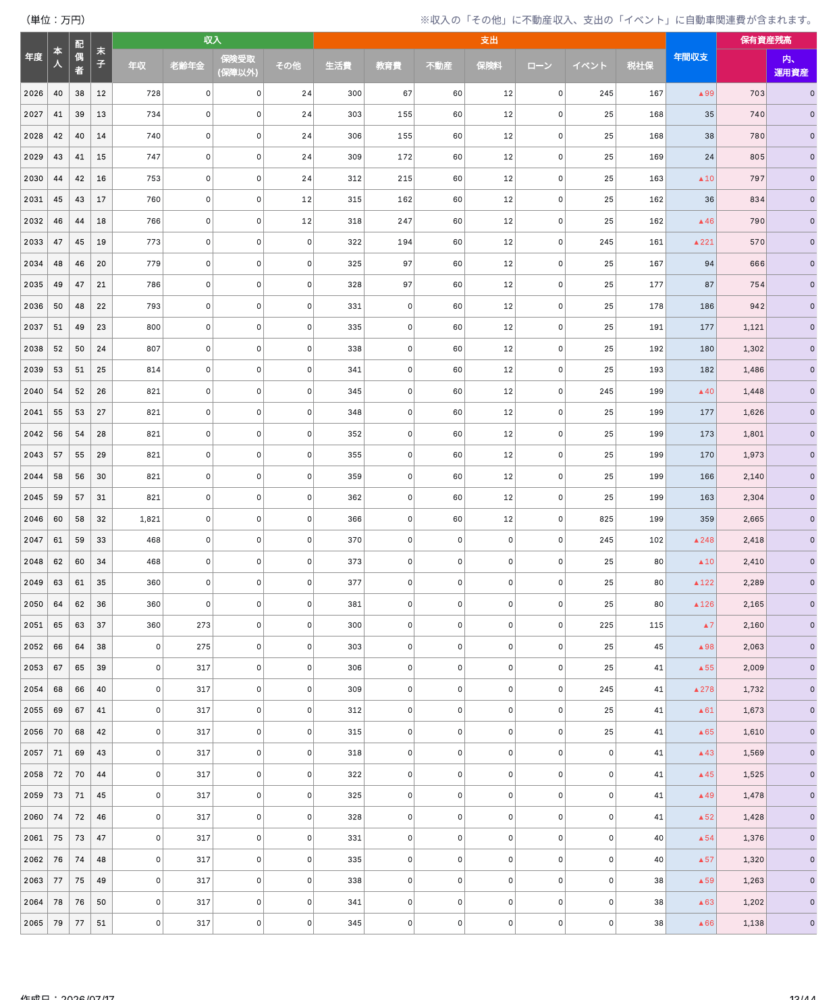
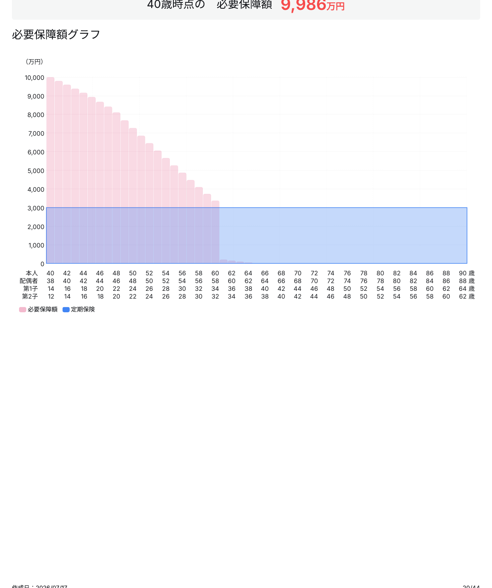
でも——"設計図ができた"は、
まだ、半分です。
本当の勝負は、ここからでした。
③ まず、この設計図を"こう"改善します。
あなたの数字に合わせた、具体的な打ち手を。
※ 改善効果のイメージ図です。打ち手の内容・効果は、お一人おひとりの状況によって変わります。
たった数字を、変えるだけ。
それだけで、未来の景色が変わります。
④ そして、ずっと隣で。
一度きりにしない。だから、変わっていける。
お金の悩みは、
一生、ついてまわります。
だからこそ——一生、隣にいます。
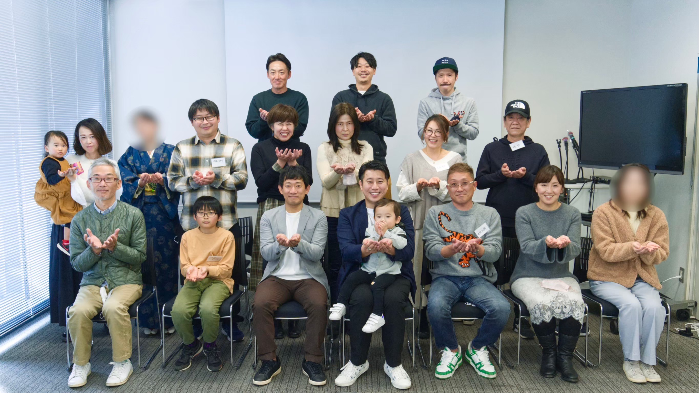
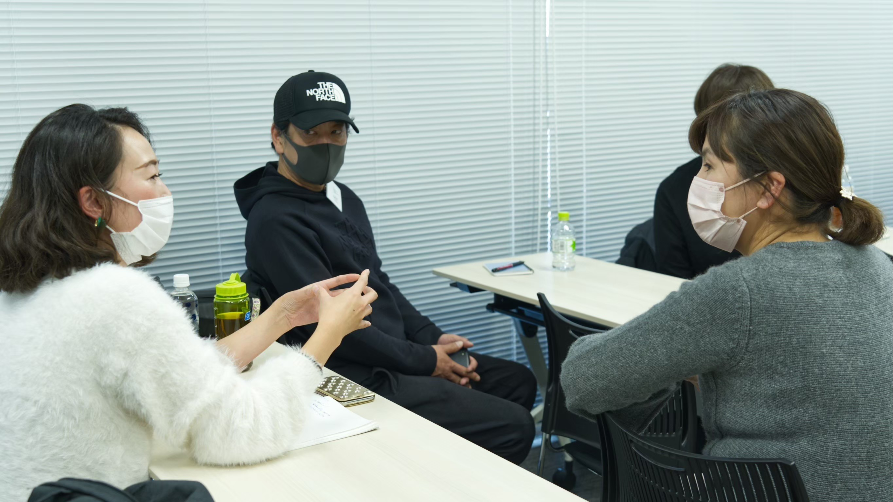
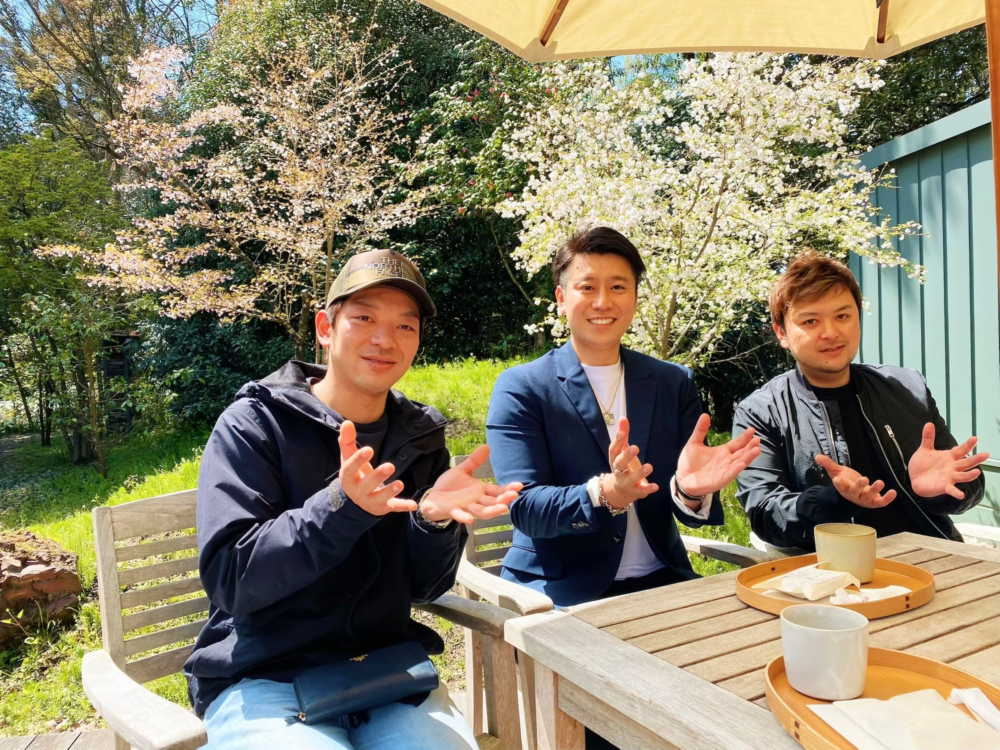
ここにいるのは、特別な方じゃありません。
「このままでいいのかな」と、ふと立ち止まった、
あなたと同じ、普通の方たちです。
お金の不安は、
金額の問題じゃありません。
"見えていない"という問題です。
見えさえすれば、
たいていのことは、何とかなる。
そして、何とかできる。
あなたの声を、力にさせてください。
※ すでに「ユメカネサロン」の方も、そのままご参加ください。
あなたの5つの回答、たしかに受け取りました。
めちゃくちゃ参考になります。
心から感謝します。
——さて。
ここからは、協力してくれたあなたへの"お礼"の話です。
この4つは、LINEでのみお渡ししています。
下のボタンから、受け取ってください。
協力してくれたあなたへのお礼なので、すべて無料です。
しつこい売り込みは一切しません。
約束します。